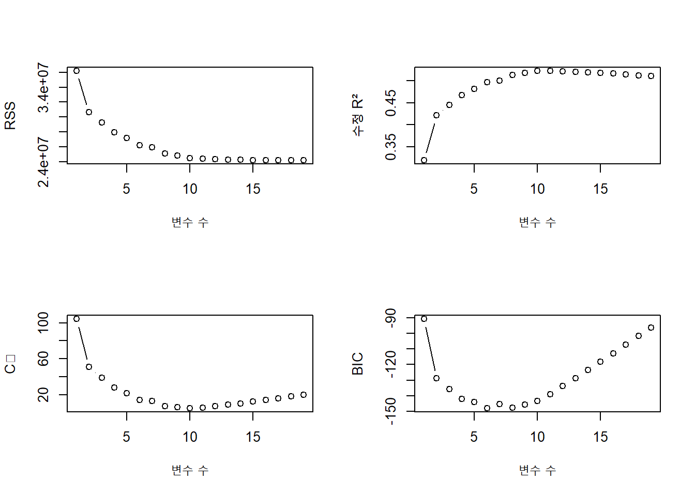
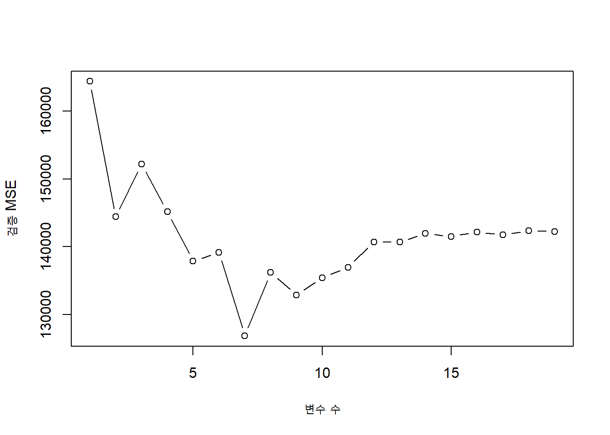
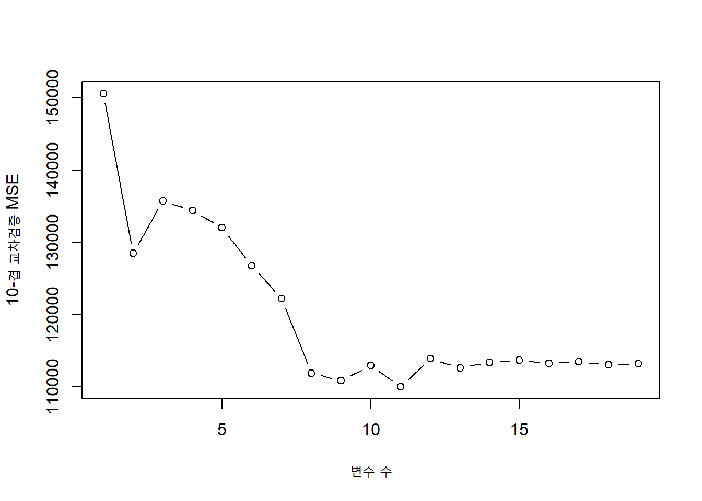
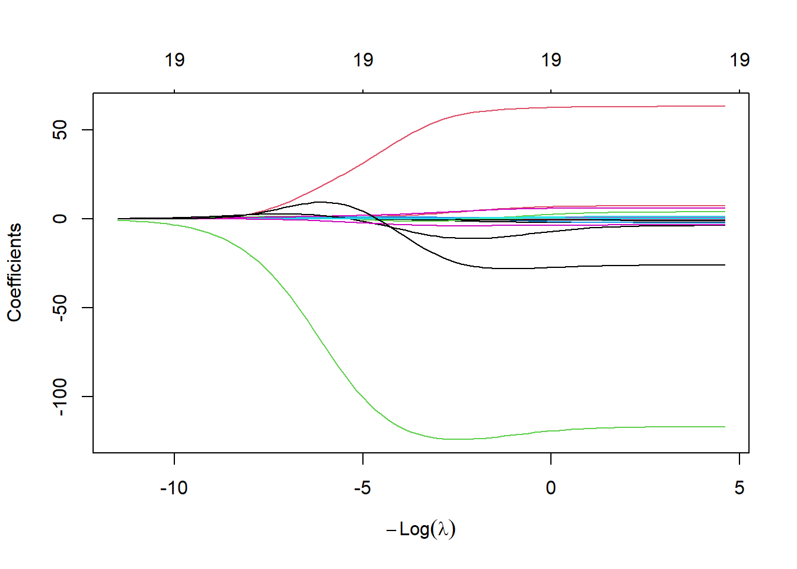
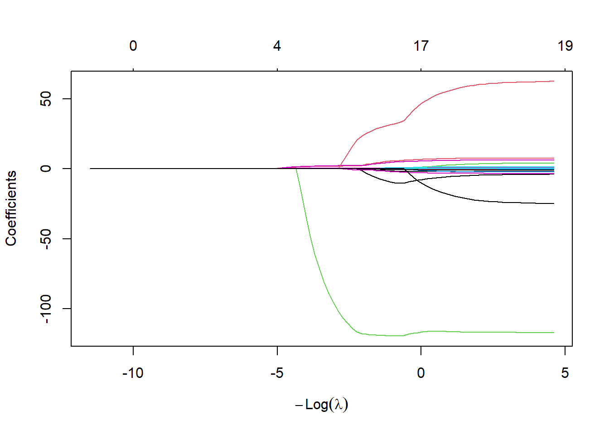
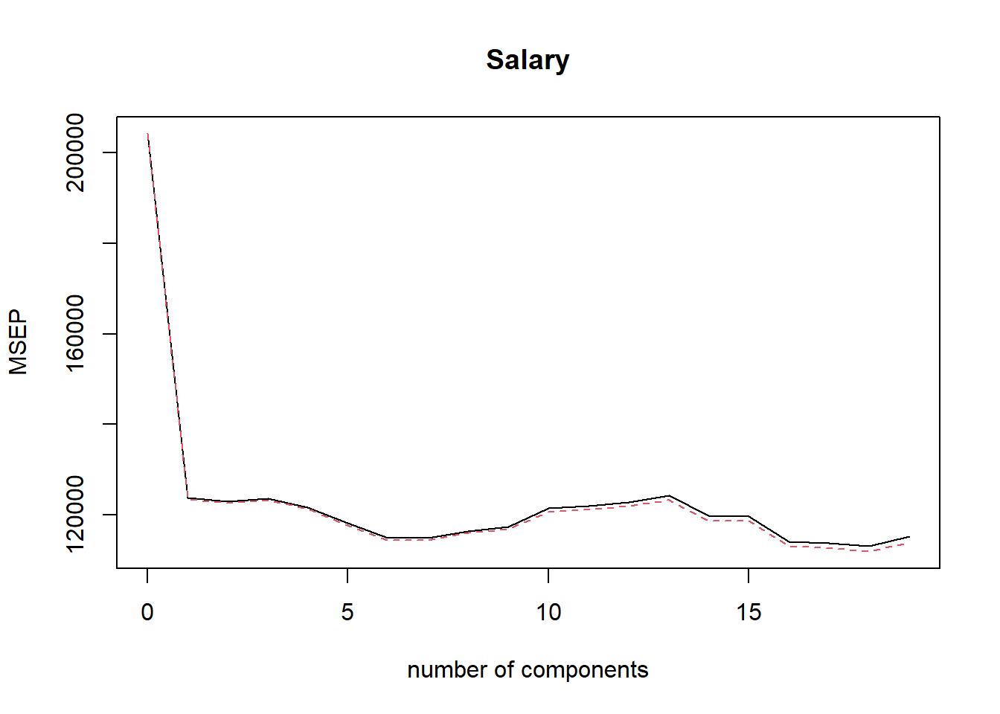
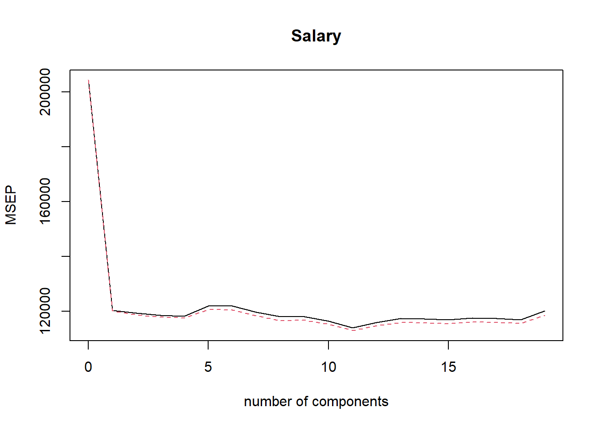

library(ISLR2)
library(leaps)
data(Hitters)
Hitters_complete <- na.omit(Hitters)
fit_subset <- regsubsets(
Salary ~ .,
data = Hitters_complete,
nvmax = 19
)
summary_subset <- summary(fit_subset)
selection_table <- data.frame(
변수수 = seq_along(summary_subset$rss),
RSS = summary_subset$rss,
수정_R2 = summary_subset$adjr2,
Cp = summary_subset$cp,
BIC = summary_subset$bic
)
head(selection_table)7 모형 선택과 정규화
선형회귀에서 최소제곱법은 설명변수가 많지 않고 신호가 충분히 강할 때 효과적이다. 그러나 설명변수가 많거나 서로 강하게 상관되어 있으면 추정량의 분산이 커지고 해석이 어려워진다. 모형 선택(model selection)과 정규화(regularization)는 다음 두 목적을 가진다.
- 예측 정확도 향상: 작은 편향을 허용하는 대신 분산을 줄인다.
- 해석 가능성 향상: 중요하지 않은 변수를 제거하거나 영향력을 축소한다.
이 장에서는 세 가지 접근법을 다룬다.
- 부분집합 선택: 설명변수의 일부만 사용한다.
- 축소 방법: 모든 또는 일부 계수를 0 방향으로 줄인다.
- 차원축소: 설명변수의 선형결합으로 새로운 저차원 변수를 만든다.
7.1 변수 선택
7.1.1 최적 부분집합 선택
설명변수가 \(p\)개이면 가능한 부분집합은 모두 \(2^p\)개이다. 최적 부분집합 선택(best subset selection)은 각 변수 개수 \(k=0,1,\ldots,p\)에 대해 잔차제곱합이 가장 작은 모형을 찾고, 그 후보 중 하나를 검증오차 또는 정보기준으로 선택한다.
알고리즘은 다음과 같다.
- 절편만 포함하는 모형 \(M_0\)을 적합한다.
- 각 \(k=1,\ldots,p\)에 대해 정확히 \(k\)개의 설명변수를 포함하는 모든 모형을 적합하고, RSS가 가장 작은 모형 \(M_k\)를 선택한다.
- \(M_0,\ldots,M_p\) 중 교차검증 오차, \(C_p\), AIC, BIC 또는 수정 \(R^2\)에 따라 최종 모형을 고른다.
par(mfrow = c(2, 2))
plot(selection_table$변수수, selection_table$RSS, type = "b",
xlab = "변수 수", ylab = "RSS")
plot(selection_table$변수수, selection_table$수정_R2, type = "b",
xlab = "변수 수", ylab = "수정 R²")
plot(selection_table$변수수, selection_table$Cp, type = "b",
xlab = "변수 수", ylab = "Cₚ")
plot(selection_table$변수수, selection_table$BIC, type = "b",
xlab = "변수 수", ylab = "BIC")
par(mfrow = c(1, 1))7.1.2 전진 단계적 선택
전진 단계적 선택(forward stepwise selection)은 절편만 있는 모형에서 출발하여 한 번에 변수 하나를 추가한다. 각 단계에서 현재 모형에 추가했을 때 RSS를 가장 많이 감소시키는 변수를 고른다.
전체 부분집합을 탐색하지 않으므로 계산량이 작지만, 초기에 선택하지 않은 조합이 나중에 더 좋을 가능성을 놓칠 수 있다.
fit_forward <- regsubsets(
Salary ~ .,
data = Hitters_complete,
nvmax = 19,
method = "forward"
)
coef(fit_forward, id = 6)#> (Intercept) AtBat Hits Walks CRBI DivisionW
#> 91.5117981 -1.8685892 7.6043976 3.6976468 0.6430169 -122.9515338
#> PutOuts
#> 0.26430767.1.3 후진 단계적 선택
후진 단계적 선택(backward stepwise selection)은 모든 설명변수를 포함한 모형에서 출발하여, 제거했을 때 RSS 증가가 가장 작은 변수를 한 번에 하나씩 제거한다. 시작 모형을 적합하려면 관측치 수가 설명변수 수보다 충분히 커야 한다.
fit_backward <- regsubsets(
Salary ~ .,
data = Hitters_complete,
nvmax = 19,
method = "backward"
)
coef(fit_backward, id = 6)#> (Intercept) AtBat Hits Walks CRuns DivisionW
#> 78.2664070 -1.8158931 7.3597644 3.5123248 0.6187876 -113.7958600
#> PutOuts
#> 0.2995788전진과 후진 방법은 같은 변수 개수에서도 서로 다른 모형을 선택할 수 있다. 따라서 단계적 선택은 전체 탐색의 근사 방법으로 이해해야 한다.
7.2 최적 모형 선택
훈련 RSS는 변수를 추가할수록 항상 감소한다. 따라서 훈련 RSS만으로는 모형 크기를 결정할 수 없다. 시험오차를 추정하거나 모형 복잡도에 벌점을 부여해야 한다.
7.2.1 \(C_p\), AIC, BIC, 수정 \(R^2\)
\(k\)개의 계수를 갖는 선형모형에 대해 Mallows의 \(C_p\)는
\[ C_p=\frac{1}{n}(RSS+2k\hat\sigma^2) \]
의 형태로 생각할 수 있다. AIC도 정규오차 선형모형에서는 \(C_p\)와 밀접한 관계가 있다.
BIC는 더 강한 복잡도 벌점을 사용한다.
\[ BIC=\frac{1}{n}\left(RSS+\log(n)k\hat\sigma^2\right) \]
수정 결정계수는 변수를 추가하는 데 대한 벌점을 반영한다.
\[ R^2_{adj}=1-\frac{RSS/(n-k-1)}{TSS/(n-1)} \]
- \(C_p\), AIC, BIC는 작을수록 좋다.
- 수정 \(R^2\)는 클수록 좋다.
- BIC는 보통 \(C_p\)나 AIC보다 작은 모형을 선호한다.
best_indices <- c(
Cp = which.min(summary_subset$cp),
BIC = which.min(summary_subset$bic),
수정_R2 = which.max(summary_subset$adjr2)
)
best_indices#> Cp BIC 수정_R2
#> 10 6 11lapply(best_indices, function(k) coef(fit_subset, id = k))#> $Cp
#> (Intercept) AtBat Hits Walks CAtBat CRuns
#> 162.5354420 -2.1686501 6.9180175 5.7732246 -0.1300798 1.4082490
#> CRBI CWalks DivisionW PutOuts Assists
#> 0.7743122 -0.8308264 -112.3800575 0.2973726 0.2831680
#>
#> $BIC
#> (Intercept) AtBat Hits Walks CRBI DivisionW
#> 91.5117981 -1.8685892 7.6043976 3.6976468 0.6430169 -122.9515338
#> PutOuts
#> 0.2643076
#>
#> $수정_R2
#> (Intercept) AtBat Hits Walks CAtBat CRuns
#> 135.7512195 -2.1277482 6.9236994 5.6202755 -0.1389914 1.4553310
#> CRBI CWalks LeagueN DivisionW PutOuts Assists
#> 0.7852528 -0.8228559 43.1116152 -111.1460252 0.2894087 0.26882777.2.2 검증자료와 교차검증
정보기준은 모형 가정에 의존한다. 검증자료 또는 교차검증은 예측 성능을 직접 추정한다. 각 훈련자료에서 변수선택 절차 전체를 다시 수행해야 정보 누출을 피할 수 있다.
regsubsets() 객체는 일반적인 predict() 메서드를 제공하지 않으므로 다음과 같은 예측 함수를 정의할 수 있다.
predict_regsubsets <- function(object, newdata, id) {
form <- as.formula(object$call[[2]])
matrix_new <- model.matrix(form, newdata)
coef_id <- coef(object, id = id)
matrix_new[, names(coef_id), drop = FALSE] %*% coef_id
}set.seed(1)
train_id <- sample(c(TRUE, FALSE), nrow(Hitters_complete), replace = TRUE)
train_hitters <- Hitters_complete[train_id, ]
test_hitters <- Hitters_complete[!train_id, ]
fit_train_subset <- regsubsets(
Salary ~ .,
data = train_hitters,
nvmax = 19
)
validation_mse <- sapply(1:19, function(k) {
pred <- predict_regsubsets(fit_train_subset, test_hitters, id = k)
mean((test_hitters$Salary - pred)^2)
})
plot(1:19, validation_mse, type = "b",
xlab = "변수 수", ylab = "검증 MSE")
which.min(validation_mse)#> [1] 7set.seed(2)
K <- 10
fold_id <- sample(rep(1:K, length.out = nrow(Hitters_complete)))
cv_error <- matrix(NA_real_, nrow = K, ncol = 19)
for (fold in 1:K) {
fit_cv <- regsubsets(
Salary ~ .,
data = Hitters_complete[fold_id != fold, ],
nvmax = 19
)
for (k in 1:19) {
pred <- predict_regsubsets(
fit_cv,
Hitters_complete[fold_id == fold, ],
id = k
)
cv_error[fold, k] <- mean(
(Hitters_complete$Salary[fold_id == fold] - pred)^2
)
}
}
mean_cv_error <- colMeans(cv_error)
plot(1:19, mean_cv_error, type = "b",
xlab = "변수 수", ylab = "10-겹 교차검증 MSE")
which.min(mean_cv_error)#> [1] 117.3 축소 방법
부분집합 선택은 변수를 포함하거나 제외하는 불연속적 결정을 내린다. 축소(shrinkage) 방법은 계수에 벌점을 부여하여 계수를 0 방향으로 연속적으로 줄인다. 이로써 분산을 낮추고 다중공선성의 영향을 완화할 수 있다.
7.3.1 릿지 회귀
릿지 회귀(ridge regression)는 다음 목적함수를 최소화한다.
\[ \sum_{i=1}^{n}\left(y_i-\beta_0-\sum_{j=1}^{p}\beta_jx_{ij}\right)^2 +\lambda\sum_{j=1}^{p}\beta_j^2 \]
또는 제약식 형태로
\[ \sum_{j=1}^{p}\beta_j^2\le s \]
라고 쓸 수 있다. \(\lambda\ge0\)는 조정모수이다.
- \(\lambda=0\)이면 최소제곱 추정량과 같다.
- \(\lambda\)가 커질수록 계수는 0에 가까워진다.
- 릿지는 계수를 정확히 0으로 만들지는 않으므로 모든 설명변수를 유지한다.
절편에는 벌점을 주지 않는다. 또한 벌점이 변수의 단위에 영향을 받으므로 설명변수를 표준화하는 것이 중요하다. glmnet()은 기본적으로 표준화를 수행한다.
7.3.2 편향-분산 절충
릿지는 최소제곱법보다 편향이 있지만 분산이 훨씬 작을 수 있다. 실제 신호가 약하거나 설명변수들이 강하게 상관되어 있을 때 이 절충을 통해 시험오차를 낮출 수 있다.
library(glmnet)
x_hitters <- model.matrix(Salary ~ ., Hitters_complete)[, -1]
y_hitters <- Hitters_complete$Salary
lambda_grid <- 10^seq(5, -2, length.out = 100)
fit_ridge <- glmnet(
x_hitters,
y_hitters,
alpha = 0,
lambda = lambda_grid
)
plot(fit_ridge, xvar = "lambda", label = FALSE)
7.3.3 라쏘 회귀
라쏘(lasso)는 \(L_1\) 벌점을 사용한다.
\[ \sum_{i=1}^{n}\left(y_i-\beta_0-\sum_{j=1}^{p}\beta_jx_{ij}\right)^2 +\lambda\sum_{j=1}^{p}|\beta_j| \]
또는
\[ \sum_{j=1}^{p}|\beta_j|\le s \]
의 제약식으로 표현한다. 라쏘는 일부 계수를 정확히 0으로 만들 수 있으므로 축소와 변수선택을 동시에 수행한다.
fit_lasso <- glmnet(
x_hitters,
y_hitters,
alpha = 1,
lambda = lambda_grid
)
plot(fit_lasso, xvar = "lambda", label = FALSE)
7.3.4 릿지와 라쏘 비교
- 많은 변수가 비슷한 크기의 효과를 갖는다면 릿지가 유리할 수 있다.
- 소수의 변수만 중요한 희소모형이라면 라쏘가 유리할 수 있다.
- 상관이 높은 변수 집단에서는 라쏘가 그중 일부만 선택하는 경향이 있고, 릿지는 계수를 함께 분산시키는 경향이 있다.
- 실제 자료에서는 교차검증으로 비교해야 한다.
7.3.5 조정모수 선택
set.seed(3)
train_id <- sample(seq_len(nrow(x_hitters)), size = floor(0.7 * nrow(x_hitters)))
x_train <- x_hitters[train_id, ]
y_train <- y_hitters[train_id]
x_test <- x_hitters[-train_id, ]
y_test <- y_hitters[-train_id]
set.seed(4)
cv_ridge <- cv.glmnet(x_train, y_train, alpha = 0, nfolds = 10)
cv_lasso <- cv.glmnet(x_train, y_train, alpha = 1, nfolds = 10)
c(
릿지_lambda_min = cv_ridge$lambda.min,
라쏘_lambda_min = cv_lasso$lambda.min,
라쏘_lambda_1se = cv_lasso$lambda.1se
)#> 릿지_lambda_min 라쏘_lambda_min 라쏘_lambda_1se
#> 26.460678 2.301415 95.094746pred_ridge <- as.numeric(predict(cv_ridge, newx = x_test, s = "lambda.min"))
pred_lasso <- as.numeric(predict(cv_lasso, newx = x_test, s = "lambda.min"))
mse_comparison <- c(
릿지 = mean((y_test - pred_ridge)^2),
라쏘 = mean((y_test - pred_lasso)^2)
)
mse_comparison#> 릿지 라쏘
#> 107291.5 108619.0coef(cv_lasso, s = "lambda.1se")#> 20 x 1 sparse Matrix of class "dgCMatrix"
#> lambda.1se
#> (Intercept) 189.30807703
#> AtBat .
#> Hits 1.63135151
#> HmRun .
#> Runs .
#> RBI .
#> Walks 1.27365187
#> Years .
#> CAtBat .
#> CHits .
#> CHmRun 0.42721865
#> CRuns 0.03063284
#> CRBI 0.32340172
#> CWalks .
#> LeagueN .
#> DivisionW -31.86570694
#> PutOuts 0.03588184
#> Assists .
#> Errors .
#> NewLeagueN .lambda.min은 교차검증 오차가 최소가 되는 값이고, lambda.1se는 최소오차의 1 표준오차 범위 안에서 가장 단순한 모형을 선택한다. 후자는 더 강한 축소와 더 적은 변수를 제공한다.
7.3.6 엘라스틱넷
엘라스틱넷(elastic net)은 릿지와 라쏘 벌점을 결합한다.
\[ RSS+\lambda\left\{(1-\alpha)\frac{1}{2}\sum_j\beta_j^2 +\alpha\sum_j|\beta_j|\right\} \]
- \(\alpha=0\): 릿지
- \(\alpha=1\): 라쏘
- \(0<\alpha<1\): 엘라스틱넷
상관된 변수 집단을 함께 유지하면서 변수선택도 수행하고 싶을 때 유용하다. \(\alpha\)와 \(\lambda\)를 모두 교차검증으로 선택하려면 \(\alpha\) 후보별로 내부 교차검증을 수행하고 외부 자료에서 비교하는 것이 안전하다.
alpha_grid <- seq(0, 1, by = 0.25)
set.seed(5)
cv_alpha <- lapply(alpha_grid, function(a) {
cv.glmnet(x_train, y_train, alpha = a, nfolds = 10)
})
alpha_summary <- data.frame(
alpha = alpha_grid,
최소_CV오차 = sapply(cv_alpha, function(obj) min(obj$cvm)),
lambda_min = sapply(cv_alpha, function(obj) obj$lambda.min)
)
alpha_summary7.4 차원축소 방법
차원축소는 원래의 설명변수 \(X_1,\ldots,X_p\)를 다음과 같은 \(M\)개의 선형결합으로 바꾼다.
\[ Z_m=\sum_{j=1}^{p}\phi_{jm}X_j, \qquad m=1,\ldots,M \]
그 후 \(Z_1,\ldots,Z_M\)을 이용해 회귀모형을 적합한다. 보통 \(M<p\)이므로 추정해야 할 계수 수가 줄어든다.
7.4.1 주성분 회귀
주성분분석(principal component analysis, PCA)은 설명변수의 변동을 가장 많이 설명하는 직교 방향을 찾는다. 첫 번째 주성분은
\[ Z_1=\phi_{11}X_1+\cdots+\phi_{p1}X_p \]
중 분산이 최대가 되는 조합이며, 이후 주성분은 앞선 주성분과 직교하면서 남은 분산을 최대화한다.
주성분 회귀(principal components regression, PCR)는 상위 \(M\)개 주성분을 설명변수로 사용한다. PCR은 설명변수 \(X\)의 변동만 고려하고 반응변수 \(Y\)는 주성분 구성에 사용하지 않는다. 따라서 \(X\)의 변동이 큰 방향이 반드시 \(Y\) 예측에 중요한 방향은 아닐 수 있다.
library(pls)
set.seed(6)
fit_pcr <- pcr(
Salary ~ .,
data = Hitters_complete,
scale = TRUE,
validation = "CV"
)
summary(fit_pcr)#> Data: X dimension: 263 19
#> Y dimension: 263 1
#> Fit method: svdpc
#> Number of components considered: 19
#>
#> VALIDATION: RMSEP
#> Cross-validated using 10 random segments.
#> (Intercept) 1 comps 2 comps 3 comps 4 comps 5 comps 6 comps
#> CV 452 351.7 350.5 351.6 348.7 343.7 338.9
#> adjCV 452 351.4 350.2 351.2 348.2 343.1 338.3
#> 7 comps 8 comps 9 comps 10 comps 11 comps 12 comps 13 comps
#> CV 338.9 341.2 342.6 348.4 349.2 350.4 352.5
#> adjCV 338.3 340.5 341.9 347.2 347.9 349.1 351.0
#> 14 comps 15 comps 16 comps 17 comps 18 comps 19 comps
#> CV 346.1 346.0 337.7 337.3 336.3 339.4
#> adjCV 344.5 344.4 336.2 335.6 334.5 337.4
#>
#> TRAINING: % variance explained
#> 1 comps 2 comps 3 comps 4 comps 5 comps 6 comps 7 comps 8 comps
#> X 38.31 60.16 70.84 79.03 84.29 88.63 92.26 94.96
#> Salary 40.63 41.58 42.17 43.22 44.90 46.48 46.69 46.75
#> 9 comps 10 comps 11 comps 12 comps 13 comps 14 comps 15 comps
#> X 96.28 97.26 97.98 98.65 99.15 99.47 99.75
#> Salary 46.86 47.76 47.82 47.85 48.10 50.40 50.55
#> 16 comps 17 comps 18 comps 19 comps
#> X 99.89 99.97 99.99 100.00
#> Salary 53.01 53.85 54.61 54.61validationplot(fit_pcr, val.type = "MSEP")
explained_x <- explvar(fit_pcr)
data.frame(
주성분 = seq_along(explained_x),
설명변수_분산설명률 = explained_x,
누적설명률 = cumsum(explained_x)
)7.4.2 부분최소제곱
부분최소제곱(partial least squares, PLS)은 \(Y\)와의 관련성을 고려하여 선형결합을 만든다. 첫 번째 PLS 방향은 설명변수와 반응변수 사이의 공분산이 큰 방향을 찾는다. 따라서 PCR보다 적은 성분으로 좋은 예측력을 보일 수 있지만 항상 그런 것은 아니다.
set.seed(7)
fit_pls <- plsr(
Salary ~ .,
data = Hitters_complete,
scale = TRUE,
validation = "CV"
)
summary(fit_pls)#> Data: X dimension: 263 19
#> Y dimension: 263 1
#> Fit method: kernelpls
#> Number of components considered: 19
#>
#> VALIDATION: RMSEP
#> Cross-validated using 10 random segments.
#> (Intercept) 1 comps 2 comps 3 comps 4 comps 5 comps 6 comps
#> CV 452 346.8 345.3 344.3 343.9 349.1 349.2
#> adjCV 452 346.5 344.6 343.4 342.9 347.4 347.0
#> 7 comps 8 comps 9 comps 10 comps 11 comps 12 comps 13 comps
#> CV 345.9 343.5 343.6 341.3 337.6 340.5 342.7
#> adjCV 343.9 341.4 341.6 339.5 336.1 338.7 340.5
#> 14 comps 15 comps 16 comps 17 comps 18 comps 19 comps
#> CV 342.4 341.8 342.9 342.6 342.0 346.7
#> adjCV 340.3 339.8 340.7 340.5 339.9 344.2
#>
#> TRAINING: % variance explained
#> 1 comps 2 comps 3 comps 4 comps 5 comps 6 comps 7 comps 8 comps
#> X 38.08 51.03 65.98 73.93 78.63 84.26 88.17 90.12
#> Salary 43.05 46.40 47.72 48.71 50.53 51.66 52.34 53.26
#> 9 comps 10 comps 11 comps 12 comps 13 comps 14 comps 15 comps
#> X 92.92 95.00 96.68 97.68 98.22 98.55 98.98
#> Salary 53.52 53.77 54.04 54.20 54.32 54.47 54.54
#> 16 comps 17 comps 18 comps 19 comps
#> X 99.24 99.71 99.99 100.00
#> Salary 54.59 54.61 54.61 54.61validationplot(fit_pls, val.type = "MSEP")
7.5 방법 비교와 실무 지침
| 방법 | 핵심 아이디어 | 장점 | 주의점 |
|---|---|---|---|
| 최적 부분집합 | 가능한 변수 조합 탐색 | 해석이 쉬운 작은 모형 | 변수가 많으면 계산량이 급증 |
| 단계적 선택 | 변수를 순차적으로 추가 또는 제거 | 계산이 빠름 | 전역 최적 모형을 보장하지 않음 |
| 릿지 | \(L_2\) 벌점 | 다중공선성에 안정적 | 변수를 완전히 제거하지 않음 |
| 라쏘 | \(L_1\) 벌점 | 변수선택과 축소를 동시에 수행 | 상관된 변수 중 선택이 불안정할 수 있음 |
| 엘라스틱넷 | \(L_1+L_2\) 벌점 | 상관된 변수 집단에 유연 | 두 조정모수를 선택해야 함 |
| PCR | \(X\)의 주성분으로 회귀 | 고차원과 공선성 완화 | \(Y\)를 고려하지 않고 성분 생성 |
| PLS | \(X\)와 \(Y\)의 공분산을 고려 | 예측 관련 성분을 구성 | 해석이 상대적으로 어려움 |
최종 모형을 선택할 때에는 다음 원칙을 따른다.
- 변수선택과 조정모수 선택을 포함한 전체 절차를 교차검증한다.
- 최종 시험자료는 모형 선택에 사용하지 않는다.
- 자료 전처리와 표준화는 훈련자료에서만 추정한다.
- 예측오차가 비슷하다면 더 단순하고 안정적인 모형을 선호한다.
- 선택된 변수와 계수의 불확실성을 과소평가하지 않는다.